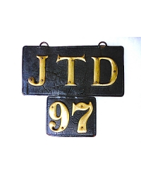
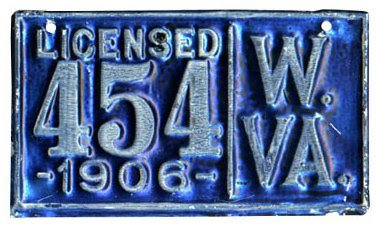

History on the creation of license plates
1900s
1901
New York State and Cleveland, Ohio were first to require some sort of number on a car for tracking purposes. Car owners simply painted their initials on the back of their cars.
If you wanted to be fancier, car owners made their own license plate from household items such as house numbers attached to wood, iron, or leather. The house numbers had to be at least three inches tall in order to be legible.
Car owners could also visit hardware stores to have a plate made from sheet metal and house numbers. Later on, hardware and auto stores sold kits to make your license plate.
It was also common to get a license plate made at local harness shop made from leather. Harness shops were looking for ways to make money since the horse and buggy was losing popularity to the car. Leather was a good choice to make a license plate from becase it is supple, pliable, does not rip or tear easily, can be drilled, stitched, and punctured by rivets in order to secure onto an automobile.
Eventually, the owner’s initials system failed because too many people had the same initials, thus the creation of the modern license plate.
1903
Philadelphia was first municipality to issue official license plates. These were made from thick steel with two color porcelain enamel finish.
Massachusetts became the first state to issue license plates. They were made from iron and covered in porcelain enamel. Porcelain enamel (aka Vitreous enamel) made sense to use because it could be applied to most metals. It also offered a smooth, hard, chemically resistant, durable, scratch resistant, long-lasting color fastness, and easy to clean surface that also could not burn. Porcelain enamel may look like paint but it is actually glass, so it does not fade under ultraviolet light which is important for a license plate since it will be outside, exposed to UV rays from the sun. Unfortunately, porcelain enamel can crack or shatter when the substrate is stressed or bent, so it is no longer used on modern license plates.
Chicago also started to feel the negative affects of owner-made license plates when fake plates started to appear. To combat this, Chicago started to issue digits for license plates. The digits were six inches talls and were created in a typeface that was not available from stores. This made spotting fake plates easier for law enforcement.
1904
Since license plates are under the authority of the states and not federal goverment, each state approached the creation of its license plates a little differently. Rhode Island began to issue license plates made from porcelain enamel fired onto thick steel. Maryland and Iowa were still requiring that car owners make their own plates, usually out of leather. Milwakee was using leather plates, St. Louis was using porcelain plates, and Washington D.C. was using owner-made plates.
1906
This was the year West Virginia debuted its own license plates. These were the first embossed (stamped) metal license plates in the United States.
Cincinnati was the first city to issue license plates. These were made from leather and beautiful engraved brass letters. Connecitcut was using plates with porcelain enamel at this time and continued with this material until 1916.
1910s
1910
Michigan issued its first license plates that were made from cast iron and seal with porcelain enamel.
1915
Michigan replaced its iron and porcelain plates with embossed, steel plates.
1917
Connecticut made with switch from porcelain enamel to painted on characters. By 1919, the state switched again from painted to embossed (stamped) characters. From 1913 onward, all plates were made from steel instead of iron.
Texas created its own license plate this year. It was made from sheet iron with white numbers on a dark blue background.
1918
By now, all U.S. states had their own state-issued license plates.
1919
Micigan started out using prison labor to manufacture license plates but this process was privatized in 1919. It switched back to prison labor the following year.
1920s
1920
Tin was now the standard material for license plates. Connecticut had a system in place where car owners got a new license plate every year. Each year's plates would be made in a different so police could easily spot expired registrations. This was a good idea but would lead to a lot of waste due to the yearly replacement. States also began using inmate labor to make license plates as a way to keep costs down.
1930s
1937
Connecticut made the switch to aluminum plates this year. This was considered pioneering.
1939
Due to World War II, all metal was devoted to the war effort, including the metal for license plates. Instead, soybean-based fiberboard was used to make license plates. A consequence was that goasts would eat these license plates because they tasted good. In Texas, DMV records show cattle were also eating the soybean license plates and quickly switched to a different material. Embossed fiberboard and cardboard were commonly used license plate materials at the time.
Wyoming decided to use a pressed cardboard material for license plates during the metal shortage. The cardboard was surprisingly durable.
1940s
1941
To make the license plates even more legible, especially at night, Georgia introduced the first reflective license plate.
1942
Before World War II, from 1920-1941, California would issue a new plate every year that displayed the registration year. When metal became a crucial resource for WWII, California stopped issuing new plates every year. Instead, the state began to issue long steel strips with the registration year that could attached to the plates. Other states introduced small metal tags that could be attached to license plates instead of issuing a new plate every year. This was the precursor to the registration stickers found on license plates today.

1948
Connecticut introduced its own reflective license plates as a safety measure. The increase of chrome detailing on vehicles and front and rear lights made the reflectiveness less essential but still helpful.
1950s
1956
Texas plates were black and white or yellow only. These colors were chosen because they would last the longest in the various weather conditions that Texas experiences such as sandstorms, humidity, and snow. Having a plate that would not wear easily in these conditions was important.
1957
Auto makers met with world governments and international standard organizations to create uniform set of dimensions for license plates. The standard size for United States license plates became 6” x 12” inches.
1960s
1967
Texas legislature approved reflective plates because they said the reflectiveness would prevent car accidents.
1970s
1971
This year, 3M introduced High Intensity Grade Reflective Sheeting. All states made this product mandatory on all license plates to improve visibility.
1973
Connecticut began to use white reflective sheeting as the background on its license plates.
1974
Colorado used a debossing method instead of embossing for the characters on its license plate. This gives plates from this time a unique look.
1975
Connecticut plates had a normal blue background with white letters. The letters were reflective using a process called “beads on paint”. This lasted longer than the full reflective sheeting used in 1973.
1980s
1987
Texas legislation allowed the state to sell $1000 custom bronze plates with 14 karat gold-plated letters and numbers.
1990s
By the 1990s, license plates manufacting methods and regulations had stopped changing. The U.S. had reached a good place to stop and the main difference between plates from the 1990s and today are the visual designs.
2000s to Present
Manufacturing of license plates has become more standarized. They are made from aluminum rolls and pressure adhesive vinyl sheeting. They can be either embossed or flat. The process can be analog or digital, which I will expand further under manufacturing process.